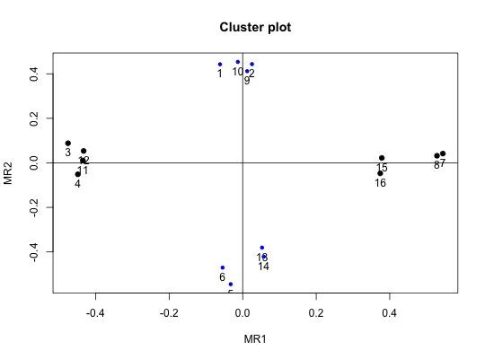

Rotations of factor analysis and principal components analysis solutions typically try to represent correlation matrices as simple structured. An alternative structure, appealing to some, is a circumplex structure where the variables are uniformly spaced on the perimeter of a circle in a two dimensional space. Generating simple structure and circumplex data is straightforward, and is useful for exploring alternative solutions to affect and personality structure. A generalization to 3 dimensional (spherical) data is straightforward.
sim.item(nvar = 72, nsub = 500, circum = FALSE, xloading = 0.6, yloading = 0.6, gloading = 0, xbias = 0, ybias = 0, categorical = FALSE, low = -3, high = 3, truncate = FALSE, cutpoint = 0) sim.circ(nvar = 72, nsub = 500, circum = TRUE, xloading = 0.6, yloading = 0.6, gloading = 0, xbias = 0, ybias = 0, categorical = FALSE, low = -3, high = 3, truncate = FALSE, cutpoint = 0) sim.dichot(nvar = 72, nsub = 500, circum = FALSE, xloading = 0.6, yloading = 0.6, gloading = 0, xbias = 0, ybias = 0, low = 0, high = 0) item.dichot(nvar = 72, nsub = 500, circum = FALSE, xloading = 0.6, yloading = 0.6, gloading = 0, xbias = 0, ybias = 0, low = 0, high = 0) sim.spherical(simple=FALSE, nx=7,ny=12 ,nsub = 500, xloading =.55, yloading = .55, zloading=.55, gloading=0, xbias=0, ybias = 0, zbias=0,categorical=FALSE, low=-3,high=3,truncate=FALSE,cutpoint=0) con2cat(old,cuts=c(0,1,2,3),where)
| nvar | Number of variables to simulate |
|---|---|
| nsub | Number of subjects to simulate |
| circum | circum=TRUE is circumplex structure, FALSE is simple structure |
| simple | simple structure or spherical structure in sim.spherical |
| xloading | the average loading on the first dimension |
| yloading | Average loading on the second dimension |
| zloading | the average loading on the third dimension in sim.spherical |
| gloading | Average loading on a general factor (default=0) |
| xbias | To introduce skew, how far off center is the first dimension |
| ybias | To introduce skew on the second dimension |
| zbias | To introduce skew on the third dimension -- if using sim.spherical |
| categorical | continuous or categorical variables. |
| low | values less than low are forced to low (or 0 in item.dichot) |
| high | values greater than high are forced to high (or 1 in item.dichot) |
| truncate | Change all values less than cutpoint to cutpoint. |
| cutpoint | What is the cutpoint |
| nx | number of variables for the first factor in sim.spherical |
| ny | number of variables for the second and third factors in sim.spherical |
| old | a matrix or data frame |
| cuts | Values of old to be used as cut points when converting continuous values to categorical values |
| where | Which columns of old should be converted to categorical variables. If missing, then all columns are converted. |
This simulation was originally developed to compare the effect of skew on the measurement of affect (see Rafaeli and Revelle, 2005). It has been extended to allow for a general simulation of affect or personality items with either a simple structure or a circumplex structure. Items can be continuous normally distributed, or broken down into n categories (e.g, -2, -1, 0, 1, 2). Items can be distorted by limiting them to these ranges, even though the items have a mean of (e.g., 1).
The addition of item.dichot allows for testing structures with dichotomous items of different difficulty (endorsement) levels. Two factor data with either simple structure or circumplex structure are generated for two sets of items, one giving a score of 1 for all items greater than the low (easy) value, one giving a 1 for all items greater than the high (hard) value. The default values for low and high are 0. That is, all items are assumed to have a 50 percent endorsement rate. To examine the effect of item difficulty, low could be -1, high 1. This will lead to item endorsements of .84 for the easy and .16 for the hard. Within each set of difficulties, the first 1/4 are assigned to the first factor factor, the second to the second factor, the third to the first factor (but with negative loadings) and the fourth to the second factor (but with negative loadings).
It is useful to compare the results of sim.item with sim.hierarchical. sim.item will produce a general factor that runs through all the items as well as two orthogonal factors. This produces a data set that is hard to represent with standard rotation techniques. Extracting 3 factors without rotation and then rotating the 2nd and 3rd factors reproduces the correct solution. But simple oblique rotation of 3 factors, or an omega analysis do not capture the underlying structure. See the last example.
Yet another structure that might be appealing is fully complex data in three dimensions. That is, rather than having items representing the circumference of a circle, items can be structured to represent equally spaced three dimensional points on a sphere. sim.spherical produces such data.
A data matrix of (nsub) subjects by (nvar) variables.
Variations of a routine used in Rafaeli and Revelle, 2006; Rafaeli, E. & Revelle, W. (2006). A premature consensus: Are happiness and sadness truly opposite affects? Motivation and Emotion. http://personality-project.org/revelle/publications/rafaeli.revelle.06.pdf
Acton, G. S. and Revelle, W. (2004) Evaluation of Ten Psychometric Criteria for Circumplex Structure. Methods of Psychological Research Online, Vol. 9, No. 1 (formerly (http://www.dgps.de/fachgruppen/methoden/mpr-online/issue22/mpr110_10.pdf) also at http://personality-project.org/revelle/publications/acton.revelle.mpr110_10.pdf
See Also the implementation in this to generate numerous simulations. simulation.circ, circ.tests as well as other simulations ( sim.structural sim.hierarchical)
round(cor(circ.sim(nvar=8,nsub=200)),2)#> [,1] [,2] [,3] [,4] [,5] [,6] [,7] [,8] #> [1,] 1.00 0.24 0.01 -0.23 -0.30 -0.29 0.03 0.14 #> [2,] 0.24 1.00 0.12 -0.16 -0.04 -0.34 -0.10 -0.02 #> [3,] 0.01 0.12 1.00 0.24 -0.07 -0.21 -0.33 -0.21 #> [4,] -0.23 -0.16 0.24 1.00 0.29 0.03 -0.18 -0.39 #> [5,] -0.30 -0.04 -0.07 0.29 1.00 0.24 -0.02 -0.24 #> [6,] -0.29 -0.34 -0.21 0.03 0.24 1.00 0.25 -0.03 #> [7,] 0.03 -0.10 -0.33 -0.18 -0.02 0.25 1.00 0.19 #> [8,] 0.14 -0.02 -0.21 -0.39 -0.24 -0.03 0.19 1.00set.seed(42) data <- mnormt::rmnorm(1000, c(0, 0), matrix(c(1, .5, .5, 1), 2, 2)) #continuous data new <- con2cat(data,c(-1.5,-.5,.5,1.5)) #discreet data polychoric(new)#>#> Call: polychoric(x = new) #> Polychoric correlations #> C1 C2 #> R1 1.00 #> R2 0.48 1.00 #> #> with tau of #> 1 2 3 4 #> [1,] -1.5 -0.49 0.54 1.6 #> [2,] -1.5 -0.52 0.52 1.6#not run #x12 <- sim.item(12,gloading=.6) #f3 <- fa(x12,3,rotate="none") #f3 #observe the general factor #oblimin(f3$loadings[,2:3]) #show the 2nd and 3 factors. #f3 <- fa(x12,3) #now do it with oblimin rotation #f3 # not what one naively expect.